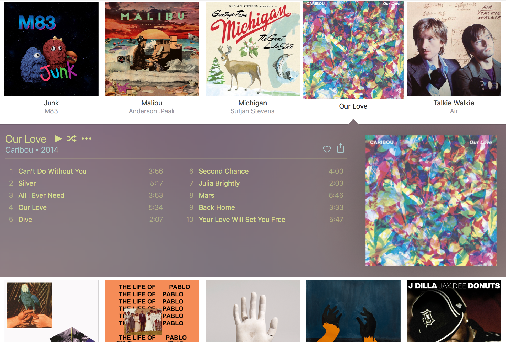
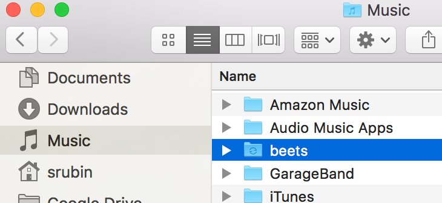
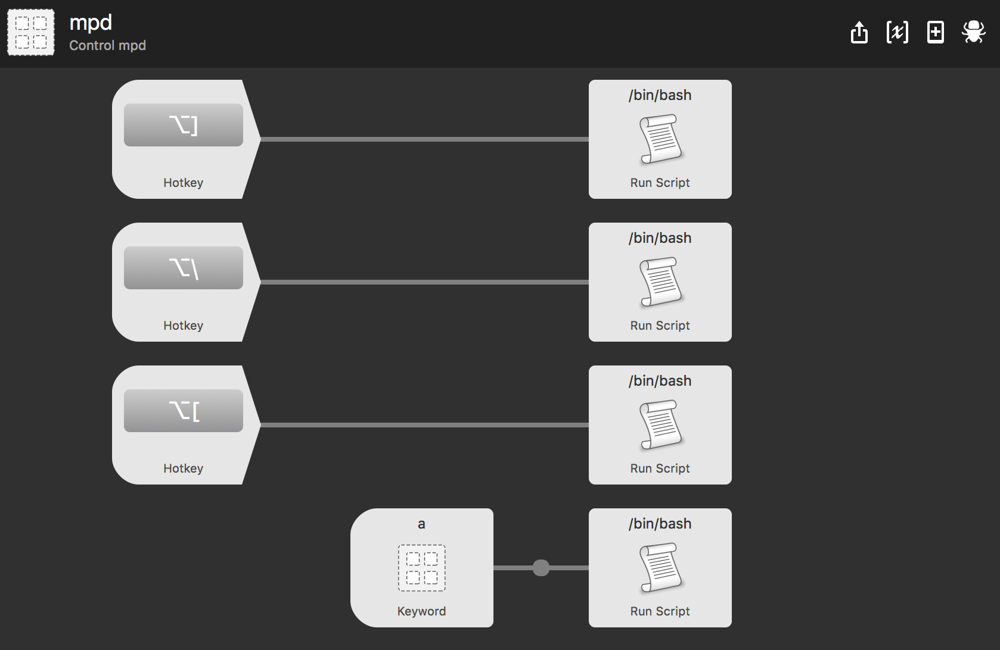
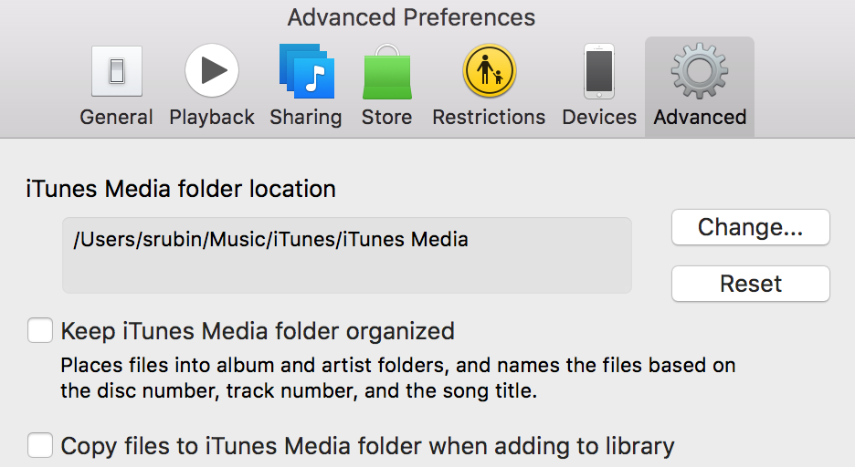
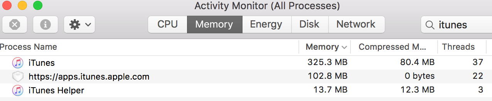
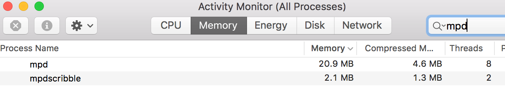

I used Windows until 2009, and I was used to disliking iTunes. I figured that Apple was doing the minimum amount of work required to support iPods on Windows. After switching to OS X (macOS), I realized that iTunes just isn't meant to be just a music player and organizer. It does those things, but it's also a tool for syncing media to your phone, a streaming music service, and a weird social network. It's a music store, a book store, a video store, an app store, a podcast store, a music video store, an audiobook store, and whatever iTunes U is.
All of these functions get in the way of the features that I care most about and use on a daily basis: organizing and playing music. The more recent iTunes redesign is pretty (it's hard to dislike the auto-selected colors for the album view) but overall, the software is a bloated usability tire fire.

I've pieced together a fast and powerful replacement to iTunes using a bunch of open source software (mpd, ncmpcpp, and beets) and my favorite do-everything macOS assistant, Alfred. This all presupposes that you, like me, still care about maintaining a collection of digital music files. Otherwise, just get Spotify and move along.
Getting started
This guide assumes you can comfortably edit files, create folders, and run commands in Terminal.
To install the open source software I reference here, you need to first install homebrew.
Library management
It's hard to maintain a clean library of digital music. When you're ripping your own CDs you generally get accurate tag metadata, but we've all downloaded albums that are mistagged or untagged. I'm not even talking about illegal downloads: I've purchased albums from band and record label websites that have no id3 tags at all.
Beets is an open source music library management tool. It takes care of all the tag gobbledy-gook that we need. To install it, enter the following commands in Terminal:
brew install python
pip install beets
Next, create a folder where you want to keep all of your music. On my computer, I created a folder called beets in ~/Music:

We need to configure beets. Create or edit ~/.config/beets/config.yaml:
directory: ~/Music/beets # Where does the music live?
library: ~/Dropbox/beets/musiclibrary.blb # Where does the beets database live?
import:
move: yes # Move your files to ~/Music/beets after import
plugins: lastgenre fetchart ftintitle mpdupdate smartplaylist random embedart
embedart:
auto: yes # Embed album art in the music files
To add an album to your new beets music library, run the following in Terminal:
beet import ~/Downloads/Car\ Seat\ Headrest\ -\ Teens\ Of\ Denial
Beets will match your album to an online database and correct its tags. If beets is unsure about what the album is, you'll get a prompt to verify the information. You can also add a bunch of albums all at once, e.g.:
beet import ~/Music/iTunes/iTunes\ Media
Playback
Once you have a perfectly organized and tagged music library, you'll probably want some way to play it. This is where mpd comes in. Mpd is a piece of software that runs in the background and plays music. It's fast and lightweight—you're certainly not going to miss iTunes in that department.
First install mpd:
brew install mpd mpc
Homebrew will let you know that mpd successfully installed, and give you a line to copy/paste into Terminal that will automatically start mpd when you start your computer. Do that.
Then create and edit ~/.mpdconf:
music_directory "~/Music/beets" # Beets music library folder
playlist_directory "~/.mpd/playlists" # Where do playlists live?
db_file "~/.mpd/database"
pid_file "~/.mpd/pid"
state_file "~/.mpd/state"
sticker_file "~/.mpd/sticker.sql"
port "6600"
auto_update "yes"
audio_output {
type "osx"
name "My Mac Device"
mixer_type "software"
}
Next, update your beets configuration (~/.config/beets/config.yaml) to work with mpd:
mpdupdate:
host: localhost
port: 6600
Make sure that mpd is updated with all your music from beets:
mpc update
The key thing to remember about mpd is that it runs and plays music in the background. There's no user interface to mpd: you need to use a client to control it. When you use a client, you're sending commands to mpd about what to play; so you can open and close clients freely without stopping playback. It's like if you could quit iTunes and still have your music playing.
You can use mpc to control playback with mpd, but you'll probably want something more user-friendly. Here's a laundry list of players you can use to control mpd. I prefer ncmpcpp, a command-line player, because I spend a lot of time in the terminal anyway. And, as you might have noticed, I want a lightning-fast client.
Install ncmpcpp:
brew install ncmpcpp
Here's my super-complex ncmpcpp configuration file (at ~/.ncmpcpp/config):
ignore_leading_the = yes # Alphabetize "The Beatles" with "B" instead of "T"
Run ncmpcpp in the terminal:
ncmpcpp
You'll see a playlist screen. (Pro tip: if you're using iTerm 2 v3 and you see a bunch of q's instead of nice lines in the UI, enable this iTerm option.) To browse your music library, hit tab. You can search this screen by typing / and then a search term, and hitting . to find the next match. To go a level deeper in the folder structure, hit return on a folder. To add a folder or file to your playlist, hit space. If you want more control over how it's added, hit a instead. There's also a slightly cleaner media library view that you can find by hitting 4. To start playback, hit tab again to return to the playlist screen and press return. There's a more advanced search interface available by typing 3—press return on a category, type your query, and hit y to see the results. You can find out more about ncmpcpp here. Hit F1 to see the help screen.
{kind=link}
You can quit ncmpcpp by typing q. But remember: the music will keep playing. If you want to toggle play/pause without opening ncmpcpp, you can use mpc from the terminal:
mpc toggle
Sheesh. You're probably used to using the media keys on your keyboard to control audio playback. Those keys are a bit finicky, but we can whip up a nice subsitute with Alfred.

The mappings are:
- Toggle play/pause: ⌥] -
/usr/local/bin/mpc toggle - Skip to the next song: ⌥\ -
/usr/local/bin/mpc next - Restart the current song: ⌥[ -
/usr/local/bin/mpc seek 0
I like listening to whole albums, so I added another workflow that lets me type, for example, a 808s in Alfred to add the album or albums matching "808s" to my current playlist. Alfred and mpd on an ultralight beam:
You can download my Alfred workflow to control mpd.
Syncing with the iPhone
I've shed my dependence on iTunes using beets, mpd, ncmpcpp, and Alfred, but I still need to use it to sync my music to my iPhone. There's an easy way to manage this. First, make sure you remove iTunes's privilege to manage your music library for you. In iTunes, go to Advanced Preferences and uncheck "Keep Music folder organized" and "Copy files to iTunes Media when adding to library."

We can automatically create a playlist that contains all of our music every time we import new music into beets. Modify ~/.config/beets/config.yaml:
smartplaylist:
playlist_dir: ~/.mpd/playlists
playlists:
- name: all.m3u
query: '' # Matches all music in your library
Now, after you import something with beet import, open ~/.mpd/playlists and drag all.m3u into iTunes. iTunes is smart enough to only add the new files to your library. Then you can sync with your iPhone and go about your life mostly iTunes-free.
Bonus: Scrobbling to last.fm
If you're obsessive enough to install and learn all these new tools, you are probably a last.fm fanatic like me. It's easy to setup last.fm scrobbling with mpd. First install mpdscribble:
brew install mpdscribble
and run the command that homebrew gives you to start mpdscribble on login. Edit the last.fm section of /usr/local/etc/mpdscribble.conf with your username and password:
# The port that the MPD listens on and mpdscribble should try to
# connect to. Defaults to $MPD_PORT or 6600.
#port = 6600
[last.fm]
url = http://post.audioscrobbler.com/
username = YOUR_LASTFM_USERNAME
password = YOUR_LASTFM_PASSWORD
# The file where mpdscribble should store its Last.fm journal in case
# you do not have a connection to the Last.fm server.
journal = /var/cache/mpdscribble/lastfm.journal
Mpdscribble will now scrobble everything that mpd plays.
Bonus: Ripping CDs (What's a CD?)
CDs are dumb. If you absolutely must, use abcde to rip CDs. It's great (well, as great as a tool can be for turning a dumb thing into a not dumb thing).
brew install abcde cdparanoia eyeD3
Here's the ~/.abcde.conf that I use for ripping CDs to mp3s. You can run it by inserting a CD and entering the command
abcde
to rip the CD in the drive. That is, if you even have a CD drive.
Bonus: Backup
I keep my ~/Music/beets folder synced between all of my computers using Resilio Sync (née BitTorrent Sync). You could also use something like Google Drive or Dropbox if you want to pay for those. The nice thing about Sync is that it keeps everything in sync between all of your computers without requiring cloud storage.
You could also use an open source solution here, like syncthing or writing some scripts around rsync or something. Resilio Sync is easy to setup and works great for my simple use case.
Wrapping up
We did it! We don't need iTunes anymore except to sync to the phone, grumble grumble. It feels great, doesn't it? We went from this:

to this:

while doing nothing but playing a song.
In addition to the obvious benefits you get from using The Right Tool For The Job, each of these tools has oodles of options that you can tweak to perfect your music organizing and listening experience. For example, we barely used any of the functionality of beets, and look at all these plugins!
Enjoy!